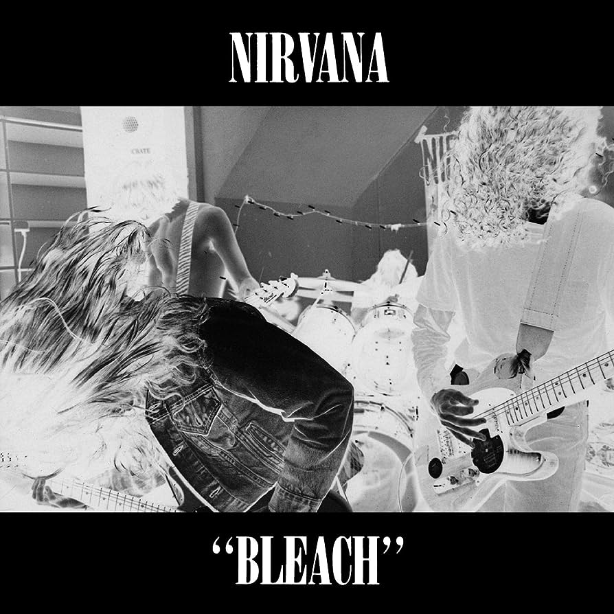
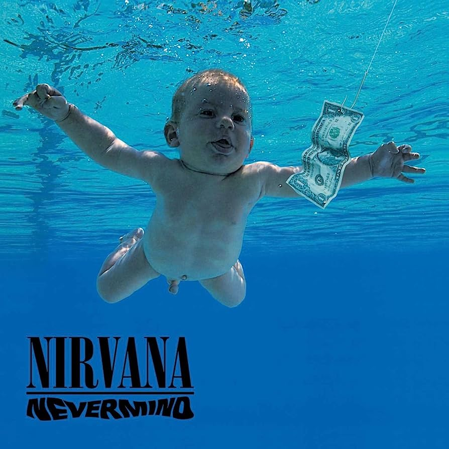
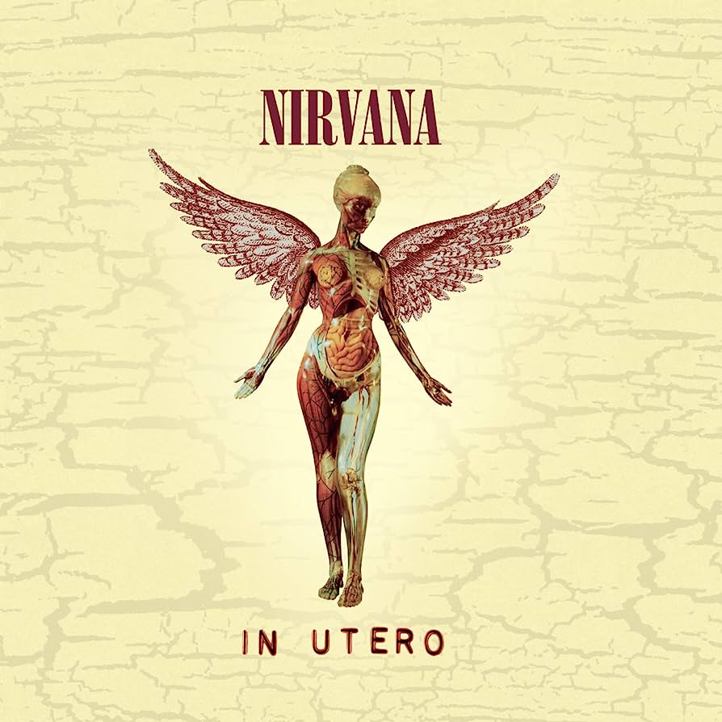

Bleach

Primer disco de Nirvana, publicado el 15 de junio de 1989. De primeras no tuvo un gran éxito entre la gente, hasta que lo volvieron a
lanzar después de que "Nevermind" arrasara. Es un disco con unas letras consideradas muy negativas y Kurt Cobain reconoció que lo
escribió cuando se sentía "molesto".
Nevermind

Segundo disco de Nirvana, publicado el 24 de septiembre de 1991, y razón por la que Nirvana es un grupo conocido mundialmente.
Principalmente conocido el álbum por contener la canción "Smells Like Teen Spirit", también tiene muy buenas canciones como
"Come as You Are" o "Something in the Way". Está clasificado por la crítica como uno de los mejores álbumes de la historia.
In Utero

Tercer disco de Nirvana, publicado el 21 de septiembre de 1993. Fue un cambio de sonido con respecto a su anterior disco.
Inicialmente lo grabaron muy rápido y añadieron poca producción. No les convencía el resultado final, pero tampoco querían
modificar mucho las canciones, así que contrataron a otro productor para realizar algunos cambios menores y volver a mezclar
alguna de las canciones. A pesar de no contar con la misma repercusión que el anterior, fue muy bien recibido tanto por la
crítica como por el público.